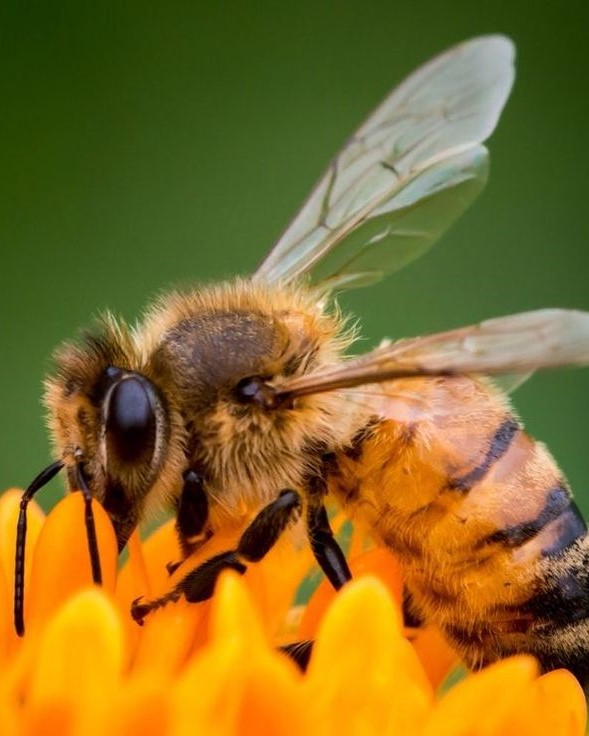

Lebah (Bee)
Lebah adalah serangga yang termasuk dalam keluarga Apoidea, yang terdiri dari lebih dari 20.000 spesies yang tersebar di seluruh dunia. Mereka dikenal terutama karena peran mereka dalam penyerbukan tanaman dan produksi madu.
Lebah adalah serangga yang termasuk dalam keluarga Apoidea, yang terdiri dari lebih dari 20.000 spesies yang tersebar di seluruh dunia. Mereka dikenal terutama karena peran mereka dalam penyerbukan tanaman dan produksi madu.
Lebah adalah makhluk yang sangat penting bagi keseimbangan alam dan kelangsungan hidup manusia melalui kontribusi mereka terhadap penyerbukan dan produksi madu.
Lebah sering ditemukan di hutan karena adanya berbagai jenis tanaman berbunga yang menyediakan nektar dan serbuk sari. Umumnya mereka tinggal di hutan tropis, hutan gugur, dan hutan boreal. Lebah membutuhkan habitat yang menyediakan sumber makanan yang cukup (nektar dan serbuk sari), tempat berlindung, dan air. Mereka juga memerlukan lingkungan yang relatif bebas dari pestisida dan polusi untuk berkembang biak dan menjalankan peran mereka sebagai penyerbuk yang efektif.
Lebah mengunjungi bunga untuk mengumpulkan nektar dan serbuk sari. Saat mereka bergerak dari satu bunga ke bunga lainnya, mereka mentransfer serbuk sari, yang membantu dalam penyerbukan tanaman. Lebah pekerja keluar dari sarang untuk mencari sumber makanan. Mereka menggunakan penglihatan dan penciuman yang tajam untuk menemukan bunga. Setelah menemukan sumber makanan yang baik, lebah pekerja kembali ke sarang dan memberi tahu lebah lain dengan melakukan tarian khusus.